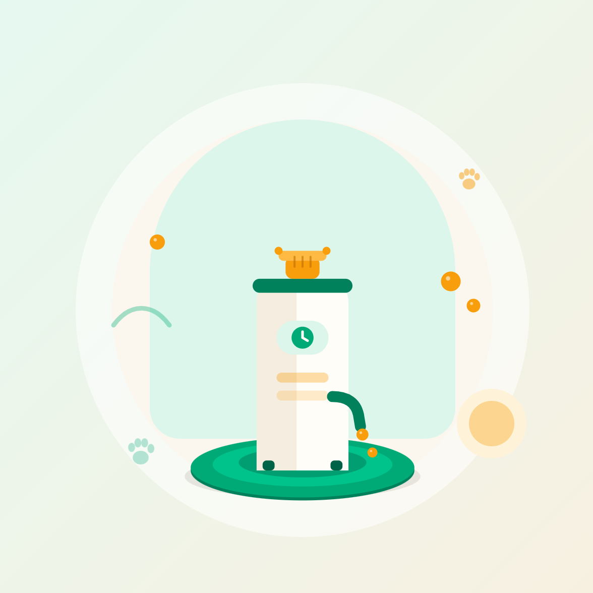
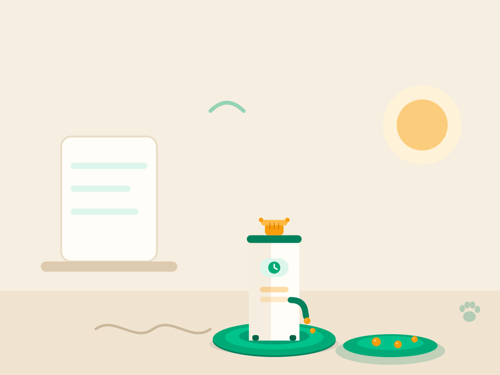

Puzzle toys
Flaps get flipped, the treats are gone, and the game is over before you have put your coat on. Clever dogs learn the trick once and never look at it again.
Snufflewind is a wind-up foraging station for dogs. Fill the 12 treat pockets, turn the crown, and head out the door. A mechanical clockwork carousel releases a pocket of food every 12 minutes or so, and your dog spends the afternoon hunting instead of waiting.

The problem with "busy" toys
Most things sold to keep a dog busy are either too easy, too fragile, or too fussy. We wanted something a dog could work at with its nose — and something that keeps working without a charger.
Flaps get flipped, the treats are gone, and the game is over before you have put your coat on. Clever dogs learn the trick once and never look at it again.
Motors jam, battery doors get gnawed, and the app wants an account, a login and a firmware update before it will drop a biscuit. Then the wifi drops.
Twelve pockets open one at a time, roughly every 12 minutes. Food lands on a silicone sniff-mat tray, so the hunting carries on long after the last treat has dropped.
How it works
Three small steps for you. One long, lovely afternoon for them.
Fill the 12 pockets with kibble or small treats, set the tray, and turn the crown until it stops. No buttons, no pairing, no batteries to find.
The clockwork carousel turns a pocket into view every ~12 minutes. Food tumbles down the spout onto the tray, and the dog has to sniff it out.
Twelve small jobs spread over an afternoon. By the time you get home, your dog has worked its nose, eaten slowly, and is ready for a nap.

Built like a good kitchen appliance
No motor, no microphone, no subscription. Just a stainless steel movement, a chew-resistant tray and a base heavy enough that a determined beagle cannot drag it across the kitchen.
Why dogs love it
Dogs do not need more toys. They need something to do. Snufflewind turns a bowl of food into twelve small discoveries, spaced out enough to feel like a proper job.
A typical afternoon, from first pocket to happy flop.
The last pocket opens around 2 hours 24. The rest of the third hour is spent checking the tray, re-checking the tray, and finally flopping down beside it. That is the point.
Key features
Designed around the way dogs actually forage: slowly, with their noses, and with a lot of repeat visits.
A wound stainless steel movement releases 12 pockets at roughly 12-minute intervals — about 30 seconds of your time for an afternoon of theirs.
Nothing to charge, pair, update or replace. It works in a power cut, in a caravan, and in the garden with no wifi.
The tray is thick food-grade silicone and the tower is BPA-free. The clockwork sits above the sniff zone, behind a stainless collar.
Start on Easy, move up when your dog gets quick. The swap-in rings change the pattern of the tray, not the amount of food.
A weighted base and four rubber feet keep the tower upright through even the most committed nosing and pawing.
Lift the tray out and put it in the dishwasher. Wipe the tower with a damp cloth. No hidden tubes, no crumb traps, no tiny parts.
Three sizes, one very good idea
Not sure? Go by weight first, then by how enthusiastically your dog attacks the recycling.
Dogs under 10 kg
$64 one-off
Dogs 10–25 kg
$79 one-off
Dogs over 25 kg
$94 one-off
Add a Refill ring set for $18 at checkout — three extra difficulty rings, so the puzzle can keep changing.
From the pack
“We used to come home to a shredded loo roll. Now we come home to a very tired cocker spaniel asleep next to the tray. The first week paid for itself in loo roll alone.”
“Mabel is a labrador, which means she has two settings: asleep and eating. She now checks the tray every few minutes, then goes back to bed. It is the calmest she has been on a workday.”
“The Medium ring was too easy for our border collie, so we swapped to Hard. It now takes her a good while to work the food out of the mat. Nothing has been chewed through yet.”
Questions, answered
Still curious? The full FAQ has more, or send us a note.
Because the food arrives slowly, the game is never "finished" in one go. Most dogs check back repeatedly between pockets. If yours learns the pattern, move up a difficulty ring — the three rings change how the tray is arranged, so the puzzle feels new again.
Snufflewind is designed for supervised solo time, which is how most people use it. There are no batteries, cables or small loose parts. Start with short sessions, use the Easy ring, and check the tower is still upright when you get home. If your dog is a serious chewer, introduce it while you are in the next room first.
Quieter than a kitchen timer and much quieter than a squeaky toy. You will hear a soft tick and the little tumble of treats. It is not silent, but it should not disturb a household — or a sleeping cat.
Dry kibble, small training treats, or broken-up biscuits — anything that fits through the spout without crumbling. Avoid sticky or greasy food, which can gum up the carousel. A few pieces of carrot work nicely too.
Lift out the silicone tray and put it on the top rack of the dishwasher, or wash it by hand. Wipe the tower and spout with a damp cloth and mild soap. Do not submerge the tower or put the clockwork in the dishwasher.
That is exactly what the tray is for. Food lands in the sniff mat rather than a bowl, so it takes nosing and licking to get it out. Use the Hard ring and slightly larger pieces to slow things down further.
One wind in the morning. Twelve small discoveries. A dog who is genuinely ready for a nap when you get home.
Shop Snufflewind